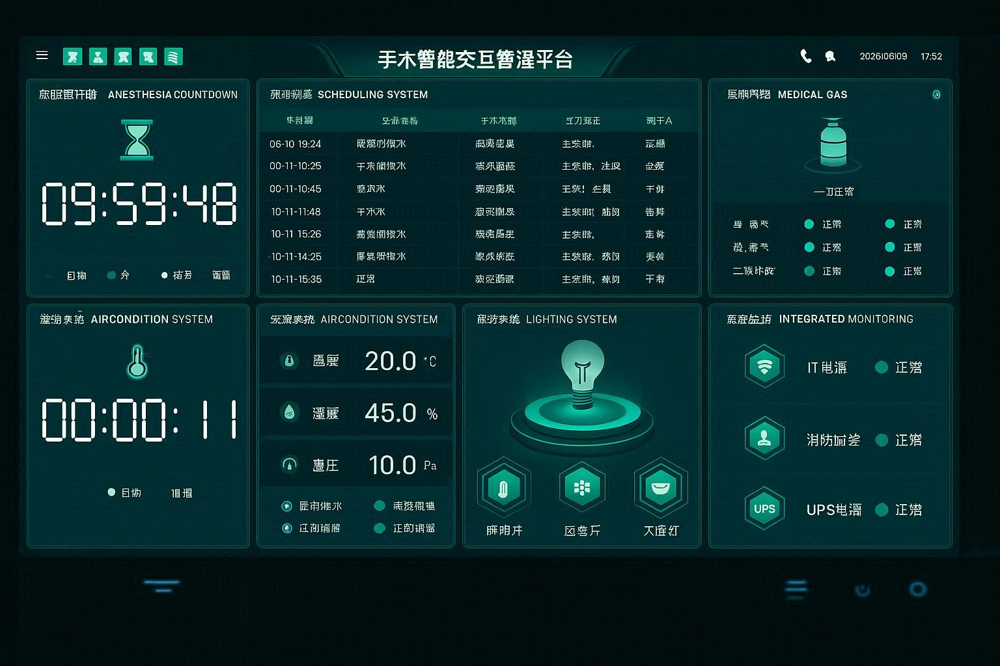
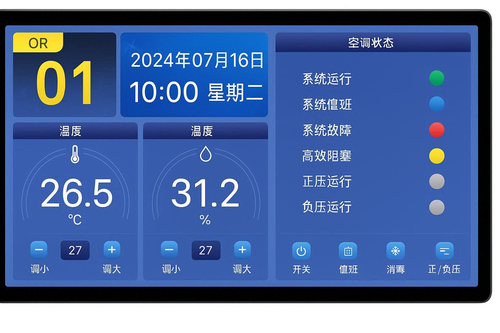
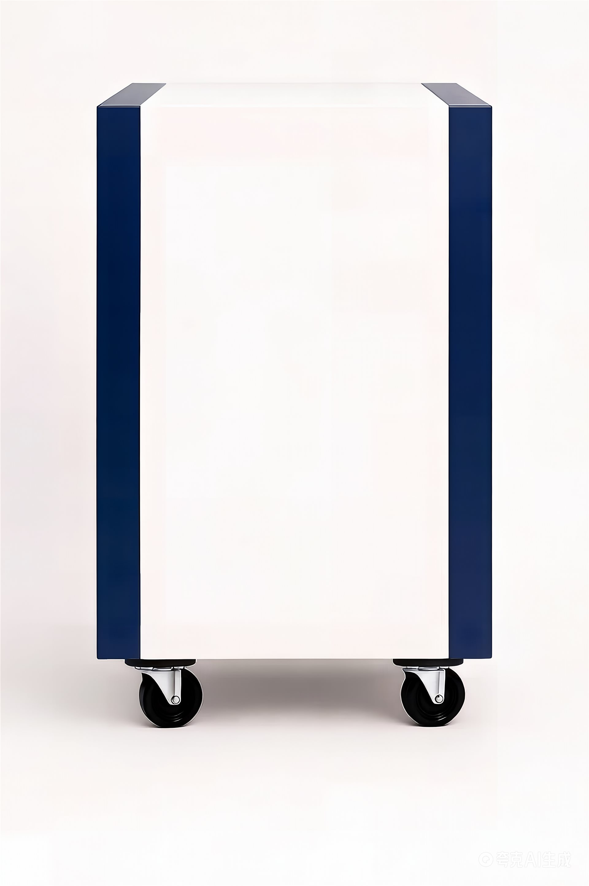

手术室集中控制系统通过触摸屏可以控制手术室内的设备，包括灯光、气体、空调、音响、电话等进行集中控制，大大提高医护人员的工作效率，增强手术的安全性，更好的服务于患者。
系统集成时钟、计时钟、照明系统、空调系统、医疗气体报警、电话及背景音乐等功能模块，实现对手术室环境的全方位管理与监控。支持消防报警联动、IT系统监控等功能。

与医院信息系统、手术排班系统联动，实现手术模式自动切换，支持一键场景控制，提升手术室管理效率。
手术室集中控制系统核心组件

